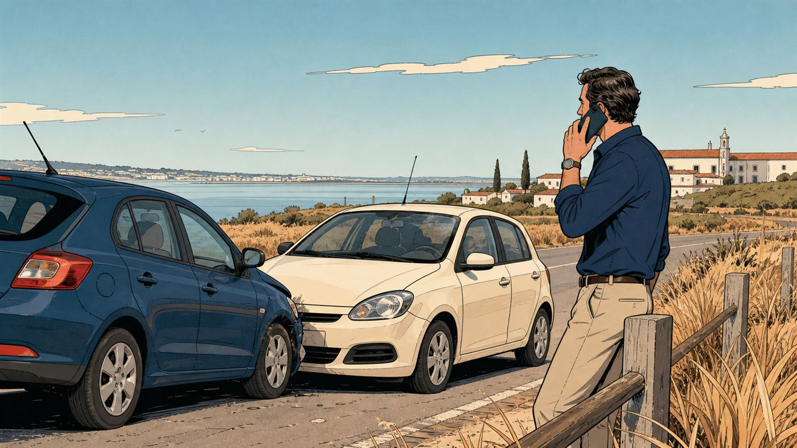

Seguro automóvel
Ligeiros, motos, comerciais e clássicos. É o seguro mais comum e, quase sempre, o pior comprado — não por má-fé de ninguém, mas porque ninguém explicou o que estava lá dentro.
O que pode incluir
Da obrigação legal
à tranquilidade real.
Em Portugal, nenhum veículo pode circular sem responsabilidade civil. Tudo o resto é escolha sua — e é exactamente aí que vale a pena parar cinco minutos antes de assinar.
- Responsabilidade civil obrigatória. Paga os danos que causar a outras pessoas, veículos e bens. É o mínimo legal e não cobre nada do que for seu.
- Danos próprios. Os estragos no seu carro em caso de choque, colisão ou capotamento — mesmo quando a culpa é sua.
- Furto, roubo e incêndio. Contratadas quase sempre em conjunto. Cobrem o desaparecimento e a destruição do veículo.
- Quebra isolada de vidros. Para-brisas, óculo traseiro e vidros laterais. Na maioria das apólices não faz perder o bónus.
- Assistência em viagem. Reboque, desempanagem e regresso a casa. Confirme se começa à porta de casa ou só a partir de certa distância.
- Veículo de substituição. O número de dias e a classe do carro variam muito entre companhias. É onde mais se nota a diferença no dia mau.
- Proteção do condutor. Trata das suas próprias lesões — que a responsabilidade civil não cobre quando o culpado é você.

Sem letra pequena
Onde acaba
a cobertura.
Uma leitura geral, para ter uma ideia clara antes da conversa. Cada apólice tem as suas condições — e é por isso que as lemos consigo, uma a uma.
Normalmente coberto
- Danos a terceiros — pessoas, veículos e bens, dentro dos capitais da apólice.
- Choque, colisão e capotamento, se tiver contratado danos próprios.
- Incêndio, raio e explosão do veículo.
- Furto ou roubo, geralmente após um período de espera para o caso de o carro aparecer.
- Fenómenos da natureza — tempestade, cheias, granizo — quando a cobertura está incluída.
- Actos de vandalismo, em muitas apólices como cobertura opcional.
Normalmente excluído
- Condução sob efeito de álcool ou estupefacientes acima dos limites legais.
- Condução sem carta válida ou com carta caducada para a categoria.
- Desgaste normal, avarias mecânicas e falta de manutenção.
- Provas desportivas e utilização em circuito.
- Objectos deixados dentro do carro — salvo cobertura específica de bagagem.
- Danos intencionais causados pelo condutor ou pelo tomador do seguro.
Lista indicativa e de carácter geral. As coberturas e exclusões concretas são as que constarem das condições gerais, especiais e particulares da apólice que vier a subscrever.
Para quem
Situações que
vemos todas as semanas.
Primeiro carro
Condutores jovens pagam mais, mas há margem para reduzir: associar um condutor habitual com histórico, ajustar a franquia, escolher bem as coberturas. Compensa simular várias combinações antes de decidir.
Carro em segunda mão
O valor seguro deve acompanhar o valor real do veículo. Um capital desactualizado significa pagar a mais todos os anos e receber a menos em caso de perda total.
Motos e ciclomotores
A responsabilidade civil é igualmente obrigatória. Aqui a proteção do condutor pesa muito mais do que num ligeiro, pelo tipo de lesões envolvidas.
Perguntas frequentes
O que nos
perguntam ao balcão.
Posso mudar de seguradora a meio do ano?
Pode. O contrato renova-se anualmente e pode ser denunciado cumprindo o pré-aviso previsto na apólice — em regra, 30 dias antes da data de renovação.
Tratamos da denúncia e da entrada em vigor da nova apólice de forma a que não fique um único dia sem seguro.
Vale a pena ter danos próprios num carro antigo?
Depende do valor do veículo e da franquia. Num carro de baixo valor comercial, o prémio dos danos próprios pode aproximar-se do que receberia em caso de perda total.
Fazemos as contas consigo antes de recomendar seja o que for. Às vezes a resposta honesta é que não compensa.
O que é exactamente a franquia?
É a parte do prejuízo que fica a seu cargo em cada sinistro. Se tiver 250 euros de franquia e o arranjo custar 900, a seguradora paga 650 e você paga 250.
Uma franquia mais alta baixa o prémio anual, mas aumenta o que paga no dia do acidente. Não há resposta certa: depende de quanto consegue suportar de uma vez sem desequilibrar as contas do mês.
Fui o culpado no acidente. O seguro paga o meu carro?
Só se tiver contratado a cobertura de danos próprios. A responsabilidade civil obrigatória cobre os danos causados a terceiros — não os do seu próprio veículo.
Tenho de preencher a declaração amigável?
Não é obrigatório, mas é o caminho mais rápido. Uma declaração assinada pelos dois condutores evita discussões sobre a versão dos factos e acelera muito a regularização.
Se o outro condutor se recusar a assinar, recolha a matrícula, o nome, a companhia e, se possível, fotografias e contactos de testemunhas. Depois ligue-nos.
Traga a sua apólice actual.
Dizemos-lhe o que falta.
Analisamos as coberturas que já tem e comparamos com o que o mercado oferece hoje. Se estiver bem servido, dizemos isso e não lhe vendemos nada.
Sem compromisso. Não usamos os seus dados para mais nada.